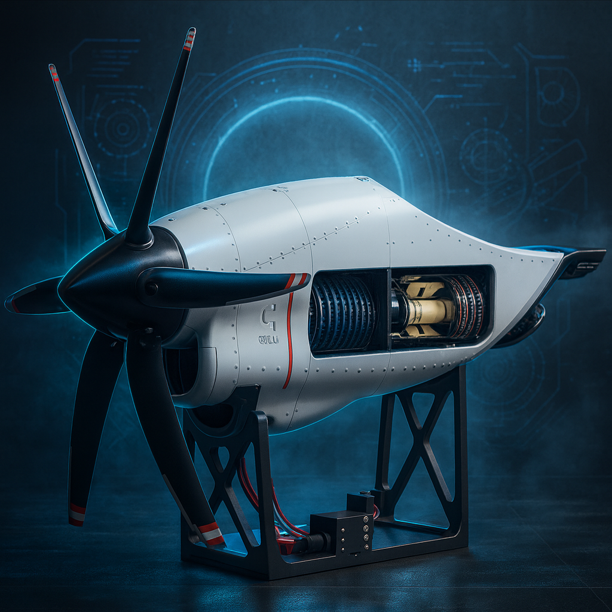
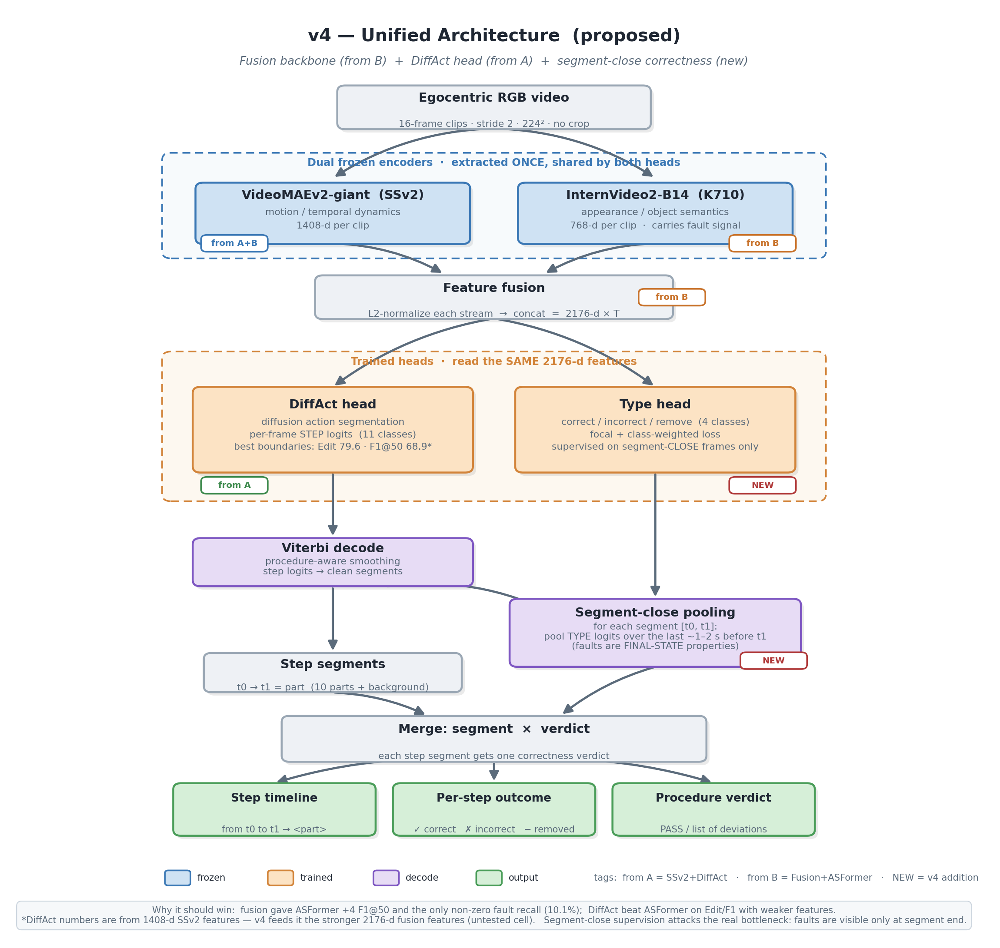
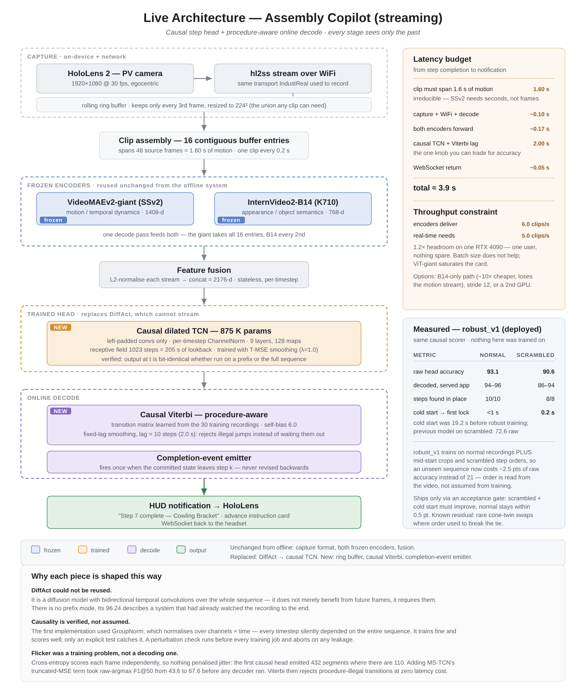
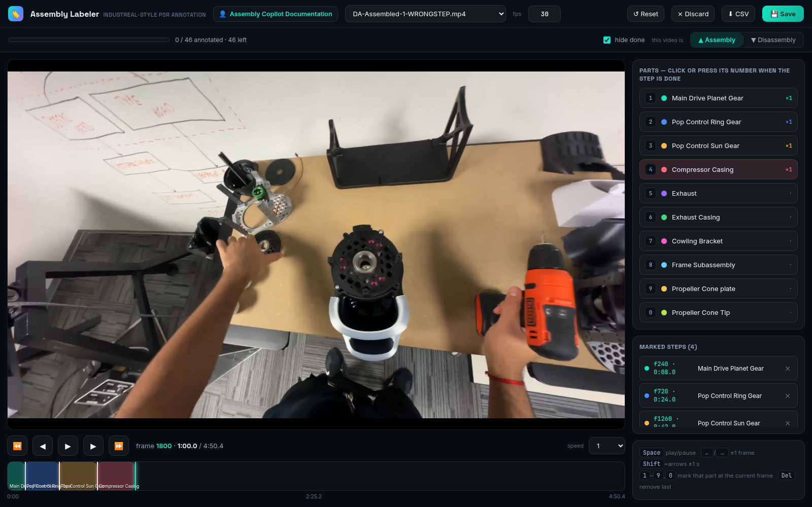
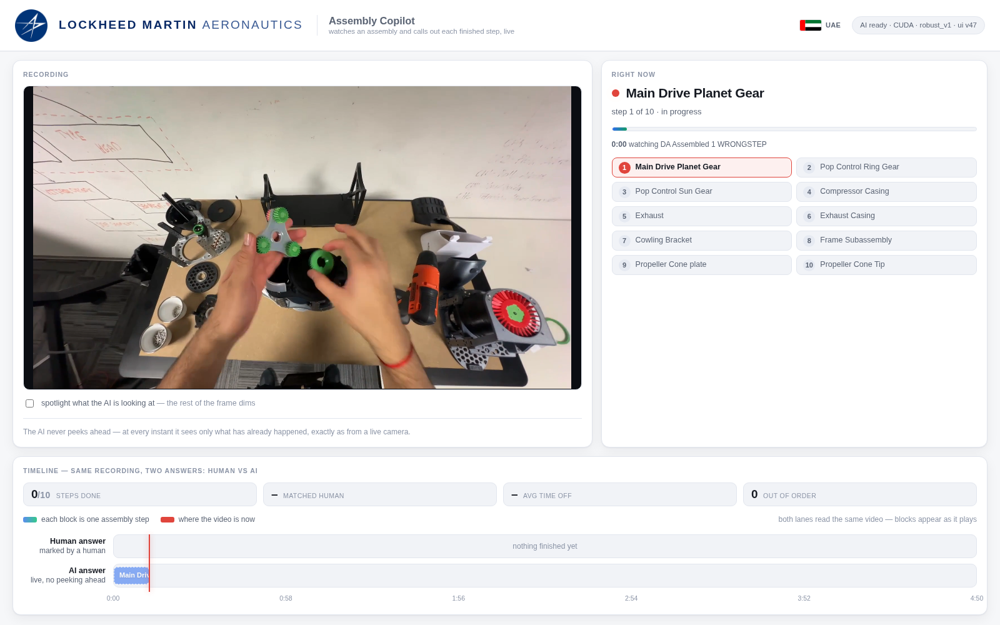
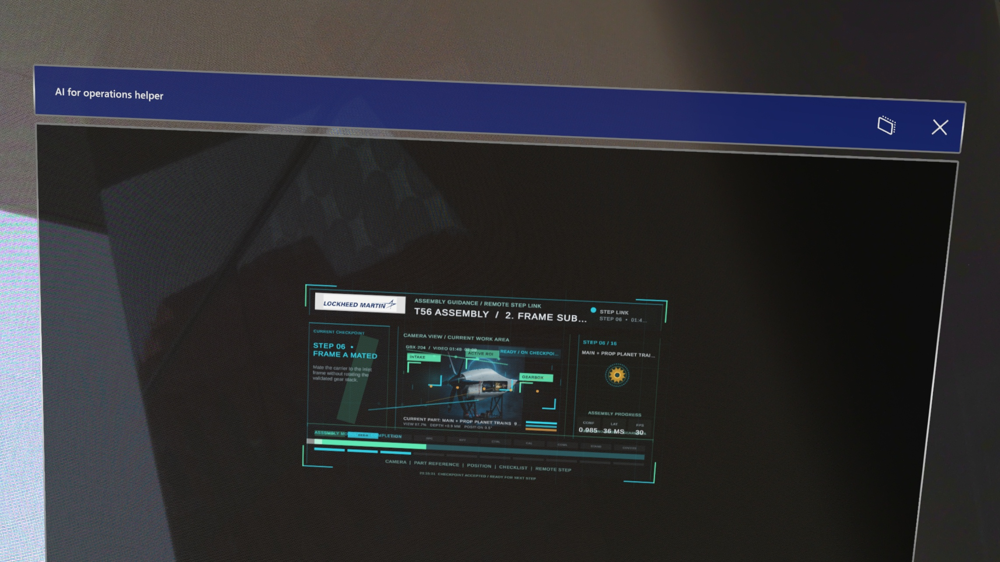

1 Preface
1.1 Project Description
1.2 Project Value
1.3 Documentation Scope
1.4 Key Outcomes
2 Program Context and Objective
2.1 Operational Problem
2.2 Development Objectives
2.3 Scope Boundaries and Success Criteria
2.4 Development Path
2.5 Transition to the Own Dataset
2.6 Assembly Object and Scope Boundary
3 Model Architecture
3.1 Offline v4 Research Architecture
3.2 Final Online Deployed Architecture
3.3 Data and Timing at Inference
3.4 Why the Online Architecture Is Causal
4 System Overview and Architecture
4.1 End-to-End Workflow
4.2 Streaming Model Path
4.3 How a New Step Is Committed
4.4 Implementation Map
5 Dataset, Data Collection, and Labeling
5.1 Engine-Model Dataset
5.2 Recording and Labeling Workflow
5.3 Label Semantics and Derived Training Data
5.4 Dataset Preparation and Split Discipline
5.5 Assembly Step Vocabulary
5.6 Stress Variants
6 Model Development and Results
6.1 IndustReal Research Progression
6.2 Iteration-by-Iteration Interpretation
6.3 What the IndustReal Results Established
6.4 Decision Before Moving to the Own Dataset
6.5 Evaluation Metrics and Selection Logic
6.6 Engine-Model Dataset Results
6.7 Causal Inference and Robustness
6.8 From Research Model to Live Checkpoint
6.9 Checkpoint-to-Application Handoff
7 Applications and Demonstration
7.1 Replay Inference
7.2 Live Inference and Step Progression
7.3 HoloLens Overlay
7.4 Demonstration Scope
8 Validation, Limitations, and Next Steps
9 Conclusion
Assembly Copilot is a computer-vision system that observes an operator's egocentric video while an assembly procedure is being performed. It estimates which procedure step is currently in progress, announces completed steps, and surfaces out-of-order activity for review. The project connects procedure-step recognition research with a working demonstration that can be replayed in a browser, served through a live video path, and displayed on a HoloLens overlay.
The demonstrator uses a ten-part turbofan engine model as the assembly object. The model is deliberately small enough to support rapid experimentation while retaining the practical characteristics of a production task: hand-object occlusion, similar-looking parts, variable step duration, incomplete views, and operators who do not follow exactly the same order.
The intended value is an additional source of situational awareness for an operator or supervisor. A live system can reduce the need to manually track procedure progress, make deviations visible earlier, and provide a consistent record for post-task review. The system is an assistive demonstrator; it is not a replacement for approved work instructions, inspection, or human sign-off.
This document records the development path from preliminary procedure-step recognition experiments to the current live inference demonstration. It covers the project objective, data collection and labeling tools, model development, streaming inference, application presentation, HoloLens integration, measured results, limitations, and recommended next steps. Proprietary internal model implementation details are described at the level needed to understand the system behavior and engineering decisions.
| Area | Documented outcome |
|---|---|
| Research | Controlled progression from a VideoMAEv2 baseline to a fused motion-and-appearance model with the best IndustReal result. |
| Data | Own egocentric engine-model recordings, dense labels, and stress variants for normal and non-nominal procedure behavior. |
| Deployment | Causal temporal inference with fixed-lag commitment, replay and live services, and a HoloLens presentation path. |
| Evidence | Separate offline, online, robustness, latency, and interface evidence so the demonstrator is not represented by one number alone. |
Assembly is a time-dependent process. The operator may hold a part out of view, repeat a motion, pause, or perform a valid operation in a different order from another operator. A useful vision system therefore has to interpret a sequence of observations rather than classify isolated images. It must also make a decision from the video available so far; using future frames would make an offline result look stronger than a real deployment can be.
The project objective was to build that complete chain: capture representative egocentric video, label the procedure, evaluate candidate recognition approaches, adapt the strongest feature representation to causal inference, and expose the result through interfaces suitable for demonstration.
The project was scoped as a procedure-state assistant, not as a complete factory inspection system. The target behavior was to identify the part or procedure state visible in the egocentric stream, preserve the order and duration of recognized steps, and expose a stable result with enough latency and robustness for a live demonstration. It was not intended to replace an approved work instruction, determine torque or fit, certify a completed installation, or independently authorize an operator to continue.
Progress was evaluated at three levels. Research experiments had to show a measurable improvement in temporal recognition quality. The own-dataset phase had to produce repeatable labels, held-out evaluation, and stress cases that challenged memorized procedure order. The final demonstration had to connect the model to a functioning replay path, a live stream, and a wearable presentation. This staged definition prevented a high offline score from being treated as sufficient evidence of operational readiness.
| Stage | Outcome |
|---|---|
| PSR research | Baselines and controlled experiments on IndustReal established the useful combination of motion and appearance information. |
| Own data collection | Forty curated egocentric recordings were captured on a ten-part engine model, covering assembly and disassembly. |
| Annotation and stress testing | Dense completion labels were produced and additional recordings were generated for scrambled, reversed, partial, and wrong-step behavior. |
| Streaming conversion | Offline sequence modeling was converted to a causal temporal model with a fixed-lag decoder. |
| Operational demonstration | Replay and live services were connected to a browser interface and a HoloLens overlay. |
The IndustReal experiments selected the feature and temporal-modeling direction; they did not replace the need for an internal dataset. The engine-model recordings were collected to test the selected approach under the camera perspective, part vocabulary, lighting, operator behavior, and procedure variability relevant to the intended demonstration.
This transition is important: the project moved from comparing architectures on a benchmark to building a complete data-to-deployment loop in which recording, annotation, training, evaluation, replay, and live presentation could all be controlled by the project team.

The model provides ten named parts and supports both installation and removal procedures. The visual appearance of a part is only one cue: the system must also use motion, temporal context, and the state of the procedure to determine which step is taking place.
| Within the demonstrated scope | Outside the demonstrated scope |
|---|---|
| Recognizing a procedure state from egocentric video. | Certifying torque, fit, or final installation quality. |
| Committing stable steps and showing procedure progress. | Replacing approved work instructions or human sign-off. |
| Flagging out-of-order or attention-requiring activity. | Providing a complete fault taxonomy for every assembly failure. |
| Delivering state to replay, live, and wearable interfaces. | Spatially anchoring every instruction to a physical part. |
The offline v4 system was the best research configuration before the project moved to its own engine-model dataset. It used the same dual frozen encoders that later became the deployed feature representation, but its temporal and correctness heads were designed for complete sequences. This configuration was valuable as an upper-bound reference because it could use context from the full recording.

| Offline component | Purpose |
|---|---|
| VideoMAEv2-giant | Frozen motion and temporal-dynamics representation, 1,408 dimensions per clip. |
| InternVideo2-B14 | Frozen appearance and object-semantic representation, 768 dimensions per clip. |
| Feature fusion | L2-normalize both streams and concatenate them into a 2,176-dimensional sequence. |
| DiffAct head | Offline action segmentation head producing per-frame step logits and strong segment boundaries. |
| Type head and segment-close logic | Exploratory correctness/type reasoning aggregated over a completed segment rather than trusted from one frame. |
| Viterbi decode | Procedure-aware smoothing that converts step logits into clean segments. |
The final online architecture preserves the v4 frozen encoders and 2,176-dimensional fusion, but replaces the non-streaming DiffAct head with a causal temporal convolutional network and fixed-lag online decoding. Every stage sees only the past and present. This is the architecture used by the replay/live services and the HoloLens demonstration.

| Stage | Role in the live system |
|---|---|
| Frame sampling | The source is reduced to approximately 10 frames per second to make the input rate predictable. |
| Clip construction | Sixteen sampled frames form a 1.6-second clip. A new clip is evaluated every 0.2 seconds, creating overlapping temporal context. |
| Motion and appearance | VideoMAEv2-giant supplies 1,408 dimensions and InternVideo2-B14 supplies 768 dimensions; the streams are fused to 2,176 dimensions. |
| Temporal head | A nine-block causal TCN with 128 feature maps models how the procedure evolves without looking ahead. |
| Decoder and emitter | Fixed-lag Viterbi uses a ten-update, approximately two-second lag; a step is announced only after the committed state changes. |
Offline action-segmentation models can use context on both sides of a transition. That is useful for research measurement but unavailable when a technician is being assisted in real time. The causal TCN scores only the evidence available up to the current update. The decoder delays the commitment slightly so that a brief occlusion or hand movement does not cause the interface to announce a false transition.
The measured live announcement delay is approximately 2.84 seconds. It combines the 1.6-second clip span, the fixed-lag decoder, and processing and transport time. The final class set contains eleven states: ten named engine-model parts and a background state; only a committed state change is treated as a new procedure step.
The live path samples the source at approximately 10 frames per second. Sixteen sampled frames form a 1.6-second clip. A new clip is evaluated every 0.2 seconds, so predictions are refreshed frequently while each prediction still contains motion context. The two feature streams are normalized and concatenated into one 2,176-dimensional vector.
The motion stream is produced by VideoMAEv2-giant and has 1,408 dimensions. The appearance stream is produced by InternVideo2-B14 and has 768 dimensions. The encoders are frozen during the final temporal-model training; the temporal head learns how the fused evidence evolves over the procedure.
The classifier produces a prediction at every 0.2-second update, but the interface does not treat every changing prediction as a new step. The decoder keeps a short history of recent class scores and applies a fixed lag of ten updates, approximately two seconds. It selects a temporally consistent path through that history and commits the oldest stable decision. A new step is therefore known when the committed label changes, not merely when the instantaneous classifier output changes.
This design reduces flicker caused by hand occlusion or ambiguous frames. The trade-off is intentional: the demonstrator reports a step after a short evidence-collection delay. The measured end-to-end announcement delay on the live path is approximately 2.84 seconds.
| Project file or area | Higher-level responsibility |
|---|---|
| copilot_model/config.py | Central paths, class names, feature and checkpoint configuration. |
| copilot_model/encoders.py | Loads the two pretrained encoders, preprocesses clips, and creates the 2,176-dimensional fusion feature. |
| copilot_model/nets/causal_tcn.py | Defines the causal temporal convolutional network used for online classification. |
| copilot_model/causal_decode.py | Runs causal scoring and fixed-lag sequence decoding for evaluation or replay. |
| training/train.py and training/augment.py | Trains the temporal head and creates training variations for robustness. |
| training/eval_gate.py | Applies the normal, scrambled, and cold-start acceptance checks. |
| replay-demo/serve_demo.py | Provides browser replay and visualization of the inference timeline. |
| holo-lens-api-app/server.py | Receives live frames, performs inference, and publishes state to clients. |
The project separates inference from presentation. The replay service runs on port 8099. The live service uses the camera/WebRTC path and exposes state through the API, with the inference applications using ports 8555 and 8556 in the current setup. The Unity HoloLens application consumes the state and renders the operator-facing overlay; it does not contain the trained model.
The inference service publishes a compact procedure state rather than exposing raw model tensors to the clients. The state contains the current committed label, the recognized procedure direction, the progress of the step list, and status information used to distinguish normal progress from out-of-order activity. The replay dashboard uses this state to draw the current-step panel and the human-versus-AI timeline. The live and HoloLens clients use the same conceptual state, which keeps presentation changes independent from model changes.
The phone or camera is responsible for publishing the video. The server receives frames, performs the sampling and buffering required by the model, maintains the temporal state, and returns the latest committed result. This separation is useful because the same trained checkpoint can be tested in replay and live modes. It also makes the eventual deployment choices explicit: inference can remain on a workstation or server while the wearable device is used primarily for capture and display.
The project moved from public benchmark experimentation to an internally collected egocentric dataset. The active corpus contains 40 curated recordings: 30 for training and 10 for held-out testing. It includes 22 assembly recordings and 18 disassembly recordings from three operators. The operator split is not subject-disjoint, so the results measure generalization to held-out recordings within the collected operating population rather than generalization to wholly new operators.
| Dataset characteristic | Value |
|---|---|
| Curated recordings | 40 |
| Train / test split | 30 / 10 recordings |
| Procedure direction | 22 assembly / 18 disassembly recordings |
| Operators | 3; not subject-disjoint between train and test |
| Source video | 1920×1080 at 30 fps |
| Modeled parts | 10 named parts plus background |
| Dense label count | 386,529 labeled frame positions |
| Playable library after stress generation | 46 assets |
The recording tool uses a phone as the egocentric camera and a local browser page for monitoring. The host provides an HTTPS page with a WebRTC live preview; the recording is saved locally as an MP4 and then transferred into the project library.
The labeling application is a FastAPI browser tool for reviewing a recording, scrubbing through the video, and marking the frame at which a part installation or removal is complete. Number keys provide a fast labeling path, while the interface records whether the procedure is assembly or disassembly. Claims, proxies, and resumable writes allow several people to work through a library without overwriting one another.

The tool produces a completion-label CSV, a segment CSV, and a JSON representation. These artifacts are converted into the frame-wise labels used for feature extraction, training, and replay visualization.
Each completion mark represents the point at which the annotator judged that a part installation or removal had finished. The downstream preparation scripts turn these sparse transition events into dense frame-wise targets: frames before and after a transition receive the corresponding procedure-state label, and frames in which no modeled action is active receive the background label. This conversion allows the temporal model to learn both the action interval and the boundary between adjacent steps.
The project retained the raw completion labels, the derived segments, and the model-ready labels as separate artifacts. Keeping these levels distinct made it possible to correct an annotation without losing the source decision, compare different boundary interpretations, and reproduce the same feature/label alignment during offline and online evaluation.
The production library was organized by recording rather than by randomly sampling individual frames. Feature extraction created one fused feature sequence per recording, and the train/test split was applied at the recording level. This avoids placing neighboring frames from the same take in both partitions. The current operator population is not subject-disjoint, which is recorded as a limitation rather than hidden by a random frame split.
| Key | Part | Assembly / disassembly label IDs |
|---|---|---|
| 1 | Main Drive Planet Gear | Install 3 / remove 5 |
| 2 | Pop Control Ring Gear | Install 6 / remove 8 |
| 3 | Pop Control Sun Gear | Install 9 / remove 11 |
| 4 | Compressor Casing | Install 12 / remove 14 |
| 5 | Exhaust | Install 15 / remove 17 |
| 6 | Exhaust Casing | Install 18 / remove 20 |
| 7 | Cowling Bracket | Install 21 / remove 23 |
| 8 | Frame Subassembly | Install 24 / remove 26 |
| 9 | Propeller Cone plate | Install 27 / remove 29 |
| 0 | Propeller Cone Tip | Install 30 / remove 32 |
Normal recordings alone do not test whether the system has learned the procedure or has memorized a familiar order. The project therefore created stress variants including scrambled order, reversed procedure, partial recordings, and wrong-step cases. These assets support controlled checks for order robustness, cold starts, and behavior when the observed action is inconsistent with the expected sequence.
The scrambled condition is particularly important because it breaks the assumption that the next part can be inferred from a fixed nominal order. A reversed recording tests directionality, a partial recording tests initialization away from the beginning of a procedure, and a wrong-step recording tests how the application communicates activity that conflicts with the expected state. Together these variants distinguish visual recognition from simple procedure-position tracking.
IndustReal was used as the controlled research setting for comparing temporal heads, backbones, decoding, and feature fusion. Acc is frame accuracy, Edit is edit score, and F1@50 is segmental F1 at an overlap threshold of 50 percent.
| Configuration | Acc | Edit | F1@50 |
|---|---|---|---|
| v1 Huge-K710 + ASFormer (baseline) | 73.3 | 68.8 | 56.3 |
| v1 + Viterbi | 73.4 | 74.2 | 62.2 |
| v2 SSv2-giant + ASFormer + Viterbi | 74.0 | 77.3 | 66.5 |
| v2 SSv2-giant + DiffAct | 74.4 | 79.6 | 68.9 |
| Fusion (giant + IV2-B14) + ASFormer + Viterbi | 75.7 | 77.6 | 68.2 |
| v4 Fusion + DiffAct — best | 84.21 | 87.19 | 79.50 |
| v4 + SAM3 enrichment | 74.9 | 79.5 | 70.1 |
The experiments established three practical conclusions. Motion and appearance information were complementary: motion described how the operator was acting, while appearance helped distinguish visually similar parts and contexts. Temporal decoding materially affected procedure boundaries; a frame-accurate classifier was not sufficient by itself. Finally, the strongest offline result was not automatically the correct deployment model because DiffAct benefited from sequence context unavailable at the moment a live decision is required.
The research also exposed the limits of using a recognition model as a correctness inspector. In the reported ablation, VideoMAE-only configurations had 0% incorrect-install recall, while the giant plus InternVideo2-B14 fusion produced the first non-zero recall at 10.1%. This was evidence that appearance fusion could help identify abnormal actions, but it was not sufficient to claim reliable visual verification. The demonstrator therefore focuses on procedure-step recognition and sequence deviations rather than certifying installation quality.
| Research decision | How it shaped the next phase |
|---|---|
| Retain dual-stream features | The engine-model pipeline used complementary motion and appearance encoders rather than reverting to a single backbone. |
| Use v4 as the offline reference | The fused representation plus DiffAct provided the upper-bound reference for the in-house dataset. |
| Do not deploy DiffAct unchanged | Its offline context requirement led to a causal temporal head for live inference. |
| Keep decoding explicit | Fixed-lag sequence commitment was retained so the interface would report stable steps rather than every transient class change. |
| Treat correctness as a separate problem | The first deployment target remained step recognition, out-of-order detection, and procedure-state presentation. |
Accuracy measures the proportion of correctly classified frame positions. Edit score measures the similarity of predicted and reference action order after collapsing repeated labels, so it is sensitive to extra, missing, or misplaced segments. F1@50 measures whether predicted action segments overlap reference segments by at least 50%. The progression was selected using all three: a model was not considered better merely because it improved frame accuracy if its procedure boundaries became less reliable.
| Configuration | Acc | Edit | F1@50 |
|---|---|---|---|
| v4 Fusion + DiffAct (offline) | 96.21 | 97.33 | 97.51 |
| Baseline (online) | 92.96 | 75.65 | 81.36 |
| Final Online V1 | 94.12 | 84.45 | 89.50 |
The offline result is a useful upper-bound reference: it benefits from sequence context that is unavailable at deployment time. Final Online V1 improves substantially over the online baseline in temporal quality while retaining strong frame accuracy. The gap between offline and online results is expected and is the reason the deployment metrics are reported separately.
The causal temporal convolutional network uses nine dilated blocks with 128 feature maps and approximately 875 thousand trainable parameters. Its receptive field is approximately 205 seconds, but its computation is causal: the output at time t depends on the current and previous feature sequence, not on future frames. The final class set contains eleven classes: the ten modeled parts and a background state.
| Checkpoint / run | Normal | Scrambled | Cold start | Decision |
|---|---|---|---|---|
| Previous baseline | 93.45% | 72.58% | 19.2 s | Reference only |
| Fine-tune A | 92.39% | 91.40% | — | Rejected: normal floor |
| Fine-tune A2 | 92.95% | 88.84% | — | Interim check; not selected |
| robust_v1 | 93.06% | 90.57% | 0.2 s | Deployed checkpoint |
SAM3-based enrichment was explored as a supporting visual branch for masks and part inventory. It did not replace the temporal recognition path or become the basis of the deployed live checkpoint.
The move to the engine-model dataset preserved the strongest transferable representation but changed the temporal and deployment assumptions. The encoders remained frozen feature extractors, while the project trained a temporal head against the in-house procedure labels. This reduced the amount of proprietary model training required and made the system easier to evaluate as a controlled change from the research reference.
Training data was expanded with normal recordings, mid-start crops, and scrambled-order variants. The resulting checkpoint was not selected from a single metric: it had to retain normal-case behavior, improve the scrambled-order condition, and initialize quickly enough for a live session. This is the reasoning behind the acceptance-gate comparison rather than simply choosing the highest offline score.
| Deployment requirement | Evidence used |
|---|---|
| Recognize normal procedure activity | Held-out normal recordings and the normal accuracy floor. |
| Resist memorized order | Scrambled-order stress recordings and committed-step review. |
| Start promptly | Cold-start timing from service initialization to first usable output. |
| Remain usable in an interface | Replay timeline, live state, and HoloLens overlay behavior. |
Once the checkpoint passed the gate, the model was not treated as an isolated file. The feature extraction path, class vocabulary, decoder lag, and service state all had to remain aligned. The replay service loads the checkpoint and runs it over a complete recording; the live service loads the same checkpoint and updates it incrementally as new clips arrive. The shared state contract then allows the browser and HoloLens clients to present the result without duplicating model logic.
| Handoff step | Engineering purpose |
|---|---|
| Prepare or compute fused features | Guarantee the same clip length, sampling rate, normalization, and feature ordering used during training. |
| Load the causal checkpoint | Use the selected temporal head and class order consistently in replay and live services. |
| Run fixed-lag commitment | Convert repeated model scores into stable step transitions and measurable delay. |
| Publish procedure state | Give presentation clients current step, progress, and attention information through one interface. |
The replay application provides a repeatable way to inspect the system. A recorded video is submitted to the service, processed through the same causal model and decoder used by the live path, and displayed with the predicted current step and procedure timeline. The interface also shows the human reference and AI interpretation on a shared timeline, making disagreements easy to inspect. This makes replay useful for comparing checkpoints, inspecting transition timing, and reproducing a failure on a fixed recording.

The live demonstration receives camera frames over the recording/WebRTC path. The service derives the model's 10 fps input, maintains a rolling clip buffer, computes features, updates the causal model, and publishes the current state. This path exercises transport, frame sampling, feature extraction, temporal state, decoding, and presentation simultaneously. The demonstrated implementation runs at approximately 1.14 times playback speed. The measured end-to-end announcement delay is approximately 2.84 seconds.
The live service publishes the current committed label, procedure direction, step progress, and attention status. A prediction that changes for one update does not immediately change the displayed step; the fixed-lag decoder must first commit the transition. This is why the interface can update frequently without making the operator watch a flickering sequence of competing labels.
The wearable presentation is implemented as a separate Unity Universal Windows Platform application for HoloLens. The current project uses Unity 2020.3.28f1 with Microsoft Mixed Reality Toolkit/OpenXR components. The trained model remains on the inference service; the Unity client polls the service state and renders the result as a movable, resizable 2D overlay.

This is a functional wearable display path rather than a spatially registered part-placement system. The current overlay is screen-space. Spatial anchors, part localization, and reference-based geometry checks remain possible future extensions. The Unity client consumes the service state but does not contain the trained model, so model iteration can continue without rebuilding the inference logic into the headset application.
The demonstration proves that the research result has been connected to a complete application path. It does not prove that every assembly fault can be detected or that the current screen-space overlay is ready for production use. The evidence is strongest for the following claims: the system can process egocentric recordings, maintain a causal running estimate, stabilize its announcements, display procedure progress, and expose a usable interface for review or wearable presentation.
The project has progressed beyond a model-only experiment. The completed chain includes a repeatable egocentric recording workflow, a browser-based labeling application with structured exports, a curated engine-model dataset and generated stress variants, controlled IndustReal and engine-model evaluation, a causal live inference service with fixed-lag step commitment, and replay, live, and HoloLens presentation paths.
The strongest supplied engine-model offline result is 96.21% accuracy, 97.33 edit score, and 97.51 F1@50. The final online result is 94.12%, 84.45 edit score, and 89.50 F1@50. The deployed robustness checkpoint reaches 90.57% on the scrambled-order stress condition and starts producing output after approximately 0.2 seconds in the reported gate.
The repository contains the model code, dataset preparation scripts, recorded assets, checkpoint, and replay/live services. The software path is based on Python and PyTorch, with FastAPI/Uvicorn for services and standard video-processing utilities for frame handling. CUDA is used when available. The HoloLens presentation is a separate Unity UWP project using MRTK/OpenXR. The reproducibility guide defines the staged sequence: prepare features and labels, generate stress data, train, run the acceptance gate, and launch the served applications.
Assembly Copilot demonstrates an end-to-end approach to procedure-step recognition from egocentric video. The work combined research experimentation, purpose-built data collection and labeling, temporal model iteration, causal online decoding, and application integration. The result is a working demonstrator that can process recorded or live video, identify stable procedure steps, expose deviations for review, and present the current state through a wearable interface.
The most important engineering outcome is the transition from a strong offline recognition result to a bounded live system. The deployed design accepts a small, explicit delay to obtain stable commitments, while remaining causal and close to real time. With broader data, subject-disjoint validation, stronger error labels, and spatially registered guidance, the same foundation can be developed into a more complete assembly-assistance capability.
[1] F. Ragusa et al., IndustReal: A Dataset and Benchmark for Industrial Procedure Understanding, 2023.
[2] M. Wang et al., “VideoMAE V2: Scaling Video Masked Autoencoders with Dual Masking,” CVPR, 2023.
[3] Y. Wang et al., “InternVideo2: Scaling Video Foundation Models for Multimodal Video Understanding,” 2024.
[4] F. Yi et al., “ASFormer: Transformer for Action Segmentation,” BMVC, 2021.
[5] M. Nawhal et al., “DiffAct: Context-Aware Diffusion Actions for Online Action Detection,” 2024.
[6] Meta AI, “Segment Anything Model 3,” project documentation, 2025.
[7] Assembly Copilot Project, README, REPRODUCING.md, and model/application source, internal repository, 2026.
[8] Assembly Copilot Project, Assembly Video Recorder and Assembly Video Labeler, internal tools, 2026.
[9] Assembly Copilot Project, HoloLens overlay application and integration notes, internal application, 2026.